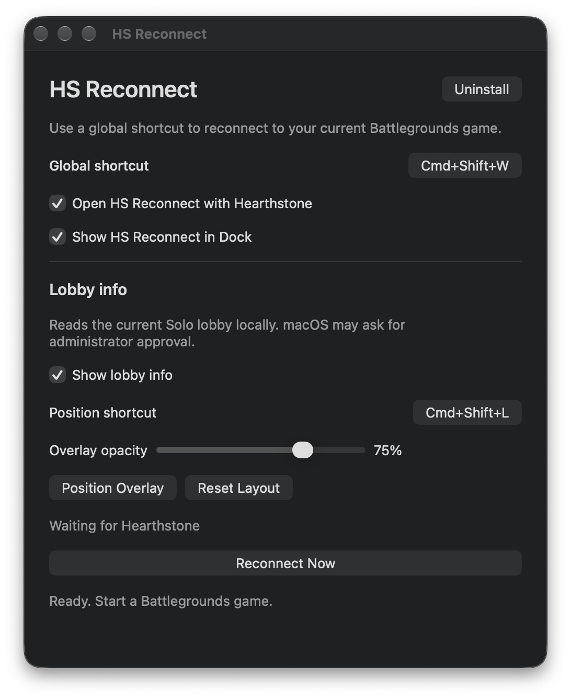

For Hearthstone Battlegrounds · macOS
HS Reconnect
Skip the battle.
With the shortcut.
A free Battlegrounds utility for Mac.
Reconnect with a shortcut and see Solo lobby ratings.
v1.3.0 · macOS 13+ · Apple silicon & Intel

Keep it close.Choose your shortcut and let the app open with Hearthstone.Shown with a custom shortcut.
Press the shortcut to reconnect.
While playing Battlegrounds, press Command–Shift–W to trigger the game’s reconnect state. Keep HS Reconnect running in the background. You can change the shortcut in the app.
Median response time
From shortcut to reconnect state.
The time between pressing the shortcut and triggering the reconnect state in Battlegrounds.
This measures the trigger, not the time to rejoin the match.
First-time setup
Install once. Then just play.
Developer ID signed. Notarized by Apple.
- 01
Open the installer
Download the disk image, open it, then run Install HS Reconnect.pkg.
- 02
Allow the extension
Open HS Reconnect. Approve the Network Extension and network configuration when macOS asks.
- 03
Start Hearthstone
Approve the local lobby reader when macOS asks. Press ⌘ ⇧ W to reconnect or ⌘ ⇧ L to position the overlay.
Dismissed the permission prompt? Reopen the app and choose Open System Settings.
A few useful details
Before you download.
Will it work on my Mac?
You need macOS 13 or later and the native Mac version of Hearthstone. Both Apple silicon and Intel are supported. Windows and CrossOver are not.
Why does it need a Network Extension?
The extension lets the app close your current Hearthstone connection when you use the shortcut. It runs locally and passes game traffic through unchanged, without inspecting or saving its contents.
How do I update?
Leave automatic update checks on, or select Check for Updates… in the app. Updates use the signed installer, so macOS may ask for an administrator password. Your shortcuts, overlay layout and startup preferences stay saved.
How do bug reports work?
Select Report a Bug… in the app. Only your description, app and macOS versions, and up to five optional images you choose, drag, or paste are sent through Forminit to the maintainer.
Does the app collect anything?
HS Reconnect uses always-on TelemetryDeck analytics to count active installations and whether reconnect or lobby info is used. It never sends player names, BattleTags, MMR, lobby data, game traffic or logs. Captured lobby data stays on the Mac. Leaderboard requests go directly to Blizzard. Update checks use GitHub, and bug reports are sent only when you press Submit. These services receive normal connection metadata such as the public IP address. Read the privacy statement ↗
Can I use HSTracker at the same time?
No. Quit HSTracker before using the lobby overlay because only one tracker can attach to Hearthstone reliably at a time.